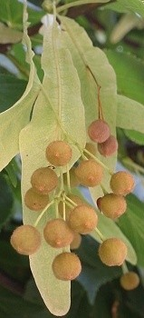

Die Früchte werden im September reif.
 Die Frucht ist ein fünfkantiges Nüsschen. Es ist hart und lässt sich mit den Fingern nicht zerdrücken.
Der lange Fruchtstiel ist mit einem flügelförmigen Tragblatt verwachsen.
 Beim Herabfallen dreht sich der Fruchtstand wie ein Propeller. Er wird leicht vom Wind davongeweht.
Beim Herabfallen dreht sich der Fruchtstand wie ein Propeller. Er wird leicht vom Wind davongeweht.